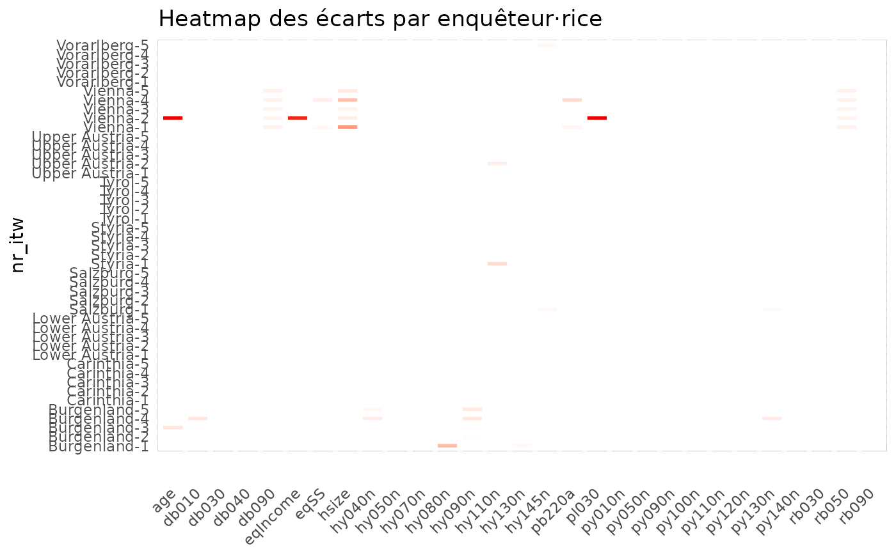
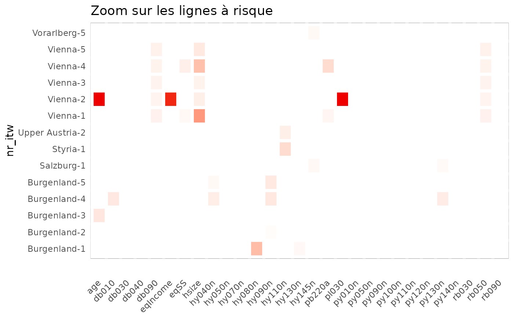
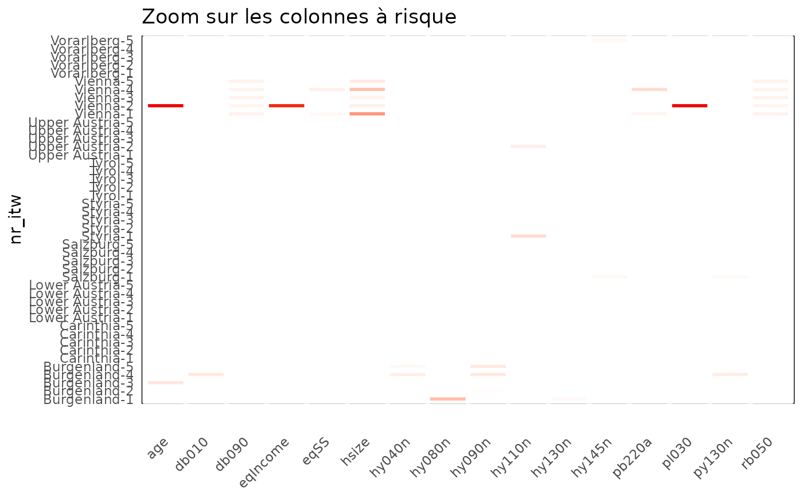
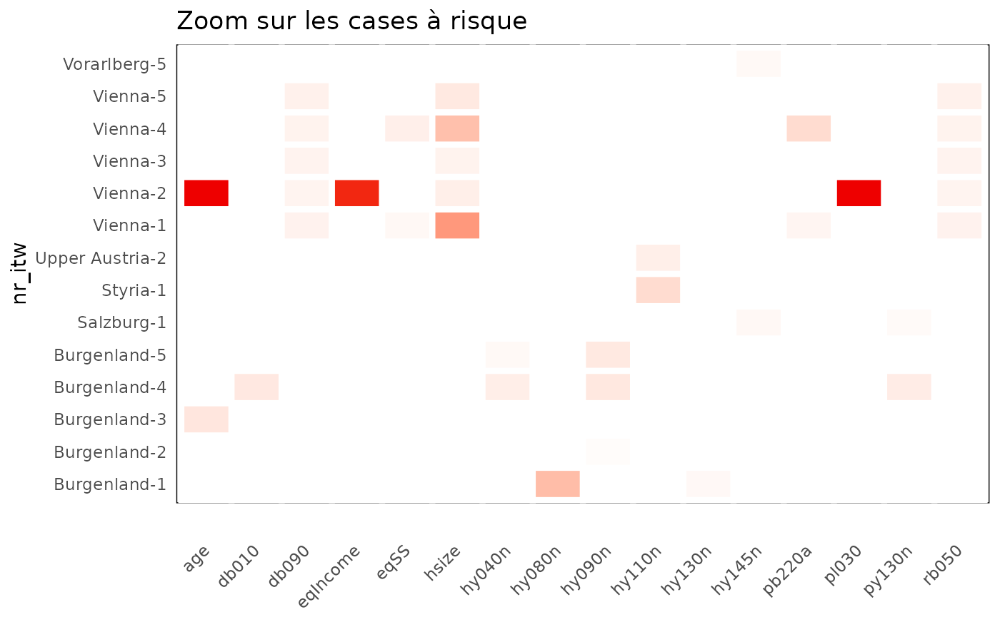
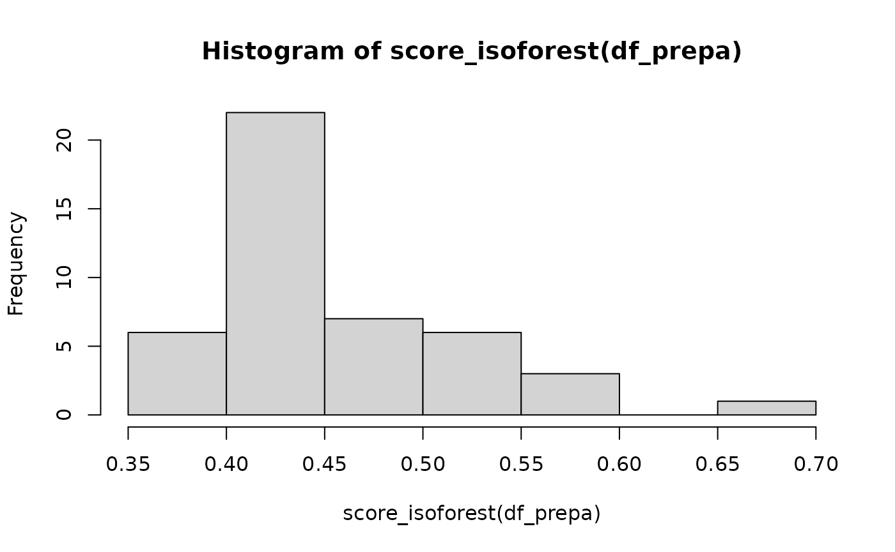

Introduction
Cette vignette présente les fondements méthodologiques et les calculs réalisés par le package {vizsurvey}. Comme expliqué dans la vignette de prise en main, {vizsurvey} n’a pas vocation à exécuter des tests statistiques ni à tirer des conclusions : c’est avant tout un outil d’exploration et de diagnostic, situé entre la collecte et l’analyse dans le cycle GSBPM.
Les calculs reposent sur des mesures simples mais robustes : distances, rangs, écarts interquartiles, variations relatives entre distributions. Ces mesures servent de repères visuels pour identifier de possibles incohérences : variations anormales d’une vague à l’autre, écarts entre enquêteur·rices, changements brusques de distribution, hausses inattendues du taux de non-réponse.
Toutes les fonctions ont été conçues pour s’appliquer à tout type de variable, catégorielle (codes, modalités, réponses à choix multiples) comme numérique (valeurs continues, durées, âges, revenus). L’objectif est un cadre de calcul générique, reproductible et robuste, qui garantisse la comparabilité des résultats entre enquêtes et entre vagues. La priorité est donnée à la stabilité des indicateurs et à la simplicité des formules, pour qu’elles restent lisibles et appropriables par les équipes d’enquête.
Ces choix méthodologiques ne sont pas figés : ils ont été progressivement affinés au sein de Statbel, à partir des premiers résultats produits par l’interface. Les retours des gestionnaires d’enquête, les échanges entre services et plusieurs références de la littérature sur la qualité des enquêtes ont guidé l’évolution des fonctions. Publier ce package est une manière de partager ces choix : en rendant publiques les formules et la logique de calcul, nous cherchons à favoriser la transparence, encourager la réutilisation et susciter les contributions d’autres équipes confrontées aux mêmes questions.
Les exemples de cette vignette s’appuient sur le jeu simulé produit
par create_eusilc_sim(), dérivé de l’extrait SILC du
package {laeken} : un identifiant d’enquêteur·rice fictif
(nr_itw), une vague fictive (db010) et des
erreurs injectées volontairement (voir la vignette
de prise en main).
df <- create_eusilc_sim()
table(df$nr_itw) |> head()
#>
#> Burgenland-1 Burgenland-2 Burgenland-3 Burgenland-4 Burgenland-5 Carinthia-1
#> 103 126 109 106 105 200
classify_df() : classer les variables
classify_df() prend une base en entrée et produit une
table avec une catégorie par variable : « Solo » si la variable ne
contient qu’une seule modalité ; « Modal » quand elle contient au plus
15 modalités ; « Continuous » quand elle est numérique avec plus de 15
modalités ; « Text » sinon. Le nombre de modalités servant à trancher se
règle avec le paramètre threshold (15 par défaut).
Cette fonction guide l’analyse dans le choix des indicateurs de
chaque variable. Vous pouvez la laisser décider seule, ou forcer la
catégorie de certaines variables via config.txt (voir la vignette
de préparation des données).
classify_df(iris)
#> # A tibble: 5 × 2
#> variable type
#> <chr> <chr>
#> 1 Petal.Length Continuous
#> 2 Petal.Width Continuous
#> 3 Sepal.Length Continuous
#> 4 Sepal.Width Continuous
#> 5 Species Modal
prepa_stats() : extraire les agrégats
prepa_stats() prend en entrée une base et une variable
de groupe (typiquement l’enquêteur·rice, ou la vague), et renvoie un
data.frame compilant les statistiques calculées pour chaque
variable, par groupe. Vous pouvez indiquer la catégorie de chaque
variable avec les arguments vars_vd (variables discrètes)
et vars_vc (variables continues) ; s’ils sont vides,
classify_df est exécutée au préalable.
prepa_stats(df, "nr_itw")Cette fonction est la version lisible du calcul ; la préparation
(prepa_survey) utilise en interne une variante {data.table}
(prepa_stats_dt), plus rapide sur les grandes bases, qui
produit la même structure de sortie.
Description de la sortie
La sortie est un fichier long, avec une ligne par croisement groupe /
variable / indicateur. Pour chaque croisement figurent le nombre de
lignes (Nrow), le nombre de valeurs valides
(Nval) et le type de la variable. Les indicateurs calculés
sont :
-
missing: pourcentage de valeurs manquantes ; -
presence: indicateur d’au moins une valeur non manquante ; -
Nmod(variables catégorielles) : nombre de modalités observées ; -
chi2(variables catégorielles) : distance entre la distribution du groupe et celle de la base complète ; -
mean/median(variables continues) : moyenne et médiane.
La colonne value donne la valeur de l’indicateur pour le
groupe, value_ref sa valeur pour l’ensemble de la
population, et standard sa version standardisée (détaillée
plus bas). C’est standard qui est comparée aux seuils de
l’interface.
Le calcul du chi²
La plupart des indicateurs ont des formules directes ; seul
chi2 mérite une attention particulière. Les étapes :
- on calcule d’abord la distribution des modalités de la variable sur
l’ensemble des lignes (
list_dist) : table de comptages convertie en proportions. Les valeurs manquantes forment une modalité « NA » à part entière, et les modalités rares (moins de 1 %) sont regroupées dans une modalité « Autres ». On obtient une distribution de référence par variable ; - au sein de chaque groupe,
my_chisq_testapplique les mêmes regroupements (manquants, modalités rares) ; - on calcule alors la statistique de chi² entre la distribution observée du groupe et la distribution de référence.
Le regroupement des modalités sous 1 % évite le bruit visuel et les
comparaisons sans objet. Traiter la non-réponse comme une modalité
dédiée permet de suivre les manquants au même titre que les réponses
valides ; l’argument na.rm = TRUE de
prepa_survey permet au contraire de les écarter du
calcul.
Deux remarques d’interprétation. D’une part, la valeur obtenue est utilisée comme une distance, jamais comme un test : aucune p-valeur n’est produite ni interprétée. D’autre part, un groupe est en partie comparé à lui-même, puisque la distribution de référence n’est calculée qu’une fois sur la base complète ; cela peut poser question si le groupe pèse lourd dans la base. Ce choix limite le temps de calcul — une seule distribution par variable — et {vizsurvey} permet ensuite de décliner les calculs par vague et par filtre.
La standardisation des indicateurs
La standardisation est réalisée par scale_IQR. Elle vise
à ramener les indicateurs sur une échelle comparable d’une variable à
l’autre, mais remplace l’écart-type usuel par l’écart interquartile
(IQR) : c’est une normalisation robuste, moins sensible aux valeurs
extrêmes. En situation dégénérée (absence de variabilité, données
bornées entre 0 et 1), elle retombe sur la standardisation classique
scale.
cut_safe() : ramener le continu au catégoriel
Pour l’analyse par enquêteur·rice, les variables continues sont
préalablement découpées en cinq classes par quantiles,
via cut_safe(), puis traitées comme des variables
catégorielles. Tout l’onglet Enquêteur se lit ainsi de la même façon,
avec une seule distance de chi².
table(cut_safe(df$age))
#>
#> 1: (-1,15] 2: (15,31] 3: (31,44] 4: (44,60] 5: (60,97]
#> 3058 2852 2982 3005 2869Ce choix a une conséquence utile : un·e enquêteur·rice dont les valeurs continues sont systématiquement décalées (une erreur d’unité, par exemple) concentre ses observations dans une ou deux classes extrêmes, ce que la distance de chi² capte immédiatement. L’analyse par vague, elle, conserve les indicateurs numériques classiques (médiane, part de manquants).
describe_variable() : décrire une variable
describe_variable() produit le tableau descriptif
affiché dans l’interface lors de la comparaison d’un·e enquêteur·rice au
reste de la base : une ligne par modalité (variables catégorielles,
effectif et pourcentage des valeurs valides) ou par statistique
(variables continues), et une colonne par groupe quand l’argument
by est fourni. Les modalités au-delà de
max_levels sont regroupées dans une catégorie « (other) »,
et les manquants font l’objet d’une ligne dédiée.
L’utilitaire group_vs_others() construit le vecteur de
groupe opposant une valeur au reste (« NR_ITW = Vienna-2 » / « NR_ITW !=
Vienna-2 »), et describe_variable_dt() enveloppe le tout
dans un tableau {DT} prêt pour Shiny.
grp <- group_vs_others(df$nr_itw, "Vienna-2", "NR_ITW")
describe_variable(df$age, by = grp)
#> Statistic NR_ITW != Vienna-2 NR_ITW = Vienna-2
#> 1 N (valid) 14 345 482
#> 2 (missing) 0 (0.0%) 0 (0.0%)
#> 3 Mean 39.2 3.9
#> 4 SD 22.4 2.1
#> 5 Min -1 -0.1
#> 6 Q1 21 2.2
#> 7 Median 39 3.9
#> 8 Q3 56 5.7
#> 9 Max 97 9
#> 10 N distinct 99 87L’erreur injectée sur Vienna-2 (âge divisé par 10) se lit immédiatement dans la comparaison des statistiques.
heatmap_group() : visualiser les écarts
Vous pouvez générer la heatmap hors de l’interface interactive.
heatmap_group prend un data.frame produit par
prepa_stats et renvoie un ggplot avec une ligne par groupe
et une colonne par variable. La fonction utilise tous les indicateurs
disponibles pour déterminer l’intensité de couleur de chaque case ; pour
limiter l’analyse à certains indicateurs, filtrez la sortie de
prepa_stats avant de tracer.
Par défaut, les cases s’affichent quand l’écart standardisé dépasse 5
; ce seuil se règle avec l’argument threshold. La couleur
va du blanc à la couleur choisie (color, rouge par défaut),
sur une échelle allant du seuil au double du seuil : un écart démesuré
n’écrase donc pas les autres.
df_stats <- prepa_stats(df, "nr_itw")
heatmap_group(df_stats, threshold = 3) +
ggtitle("Heatmap des écarts par enquêteur·rice")
On peut zoomer dans la heatmap, toujours en filtrant le data.frame. Voici les trois variantes utilisées dans l’interface :
threshold <- 3
df_stats %>%
group_by(nr_itw) %>%
filter(max(abs(standard), na.rm = TRUE) > threshold) %>%
ungroup() %>%
heatmap_group(threshold) +
ggtitle("Zoom sur les lignes à risque")
df_stats %>%
group_by(variable) %>%
filter(max(abs(standard), na.rm = TRUE) > threshold) %>%
ungroup() %>%
heatmap_group(threshold) +
ggtitle("Zoom sur les colonnes à risque")
df_stats %>%
group_by(nr_itw, variable) %>%
filter(max(abs(standard), na.rm = TRUE) > threshold) %>%
ungroup() %>%
heatmap_group(threshold) +
ggtitle("Zoom sur les cases à risque")
L’objet ggplot embarque des infobulles activables avec {plotly} — c’est la version utilisée dans l’interface :
p <- df_stats %>%
heatmap_group(3) +
ggtitle("Heatmap interactive")
ggplotly(p, tooltip = "text")
score_isoforest() : classer les profils atypiques
score_isoforest détecte les observations atypiques d’un
jeu multivarié en s’appuyant sur la méthode Isolation
Forest (package {isotree}). C’est un algorithme non supervisé, fondé
sur une idée simple : les observations inhabituelles sont plus faciles à
isoler que les « normales ». L’algorithme construit de nombreux arbres
de décision aléatoires ; une observation atypique nécessite peu de
coupes pour se retrouver seule dans une branche, et reçoit donc un score
d’isolement élevé.
Nous l’appliquons aux indicateurs standardisés calculés par
prepa_stats : la fonction attend un fichier large, on
pivote donc les indicateurs avant de l’appeler.
df_prepa <- df_stats %>%
filter(stat %in% c("chi2", "median")) %>%
select(nr_itw, variable, standard) %>%
pivot_wider(
id_cols = nr_itw,
names_from = variable,
values_from = standard
) %>%
column_to_rownames(var = "nr_itw")
head(sort(score_isoforest(df_prepa), decreasing = TRUE))
#> Vienna-2 Vienna-4 Vienna-1 Burgenland-3 Vienna-5 Vienna-3
#> 0.6521639 0.5818419 0.5652176 0.5612558 0.5347701 0.5310703
hist(score_isoforest(df_prepa))
Vienna-2, porteuse des erreurs injectées, ressort en tête. Un seuil
de 0.6 est parfois proposé dans la littérature pour qualifier un score
d’anomalie (voir
cet article) ; là encore, {vizsurvey} ne propose pas de seuil
unique, mais un classement pour guider l’investigation. C’est ce
classement qui alimente la colonne RANK de l’onglet
Enquêteur et les synthèses de l’onglet Croisé.
index_homogeneity() : mesurer l’homogénéité des
réponses
index_homogeneity calcule, pour chaque enquêteur·rice,
un indice fondé sur la part de la modalité dominante de chaque variable,
rapportée à la moyenne de cette part chez l’ensemble des
enquêteur·rices. Un indice élevé signale des réponses inhabituellement
concentrées : toujours la même modalité cochée, un questionnaire «
expédié », voire des réponses fabriquées. L’indice
(INDEX_H) figure parmi les indicateurs de la synthèse de
l’onglet Enquêteur, et entre à ce titre dans le score d’anomalie.
Les clés multi-niveaux
Quand la vague ou le filtre est défini sur deux variables
(var_wave = YEAR, QUARTER), les calculs manipulent des
clés concaténées, de la forme 2024 / T1.
Une famille de petites fonctions exportées gère ces clés, et peut servir
hors de l’interface :
-
combine_vars(df, c("YEAR","QUARTER"))construit la clé complète ; -
key_level1()etkey_level2()en extraient les niveaux ; -
keys_vars()liste les clés d’une base, au niveau 1, au niveau 2 ou aux deux ; -
match_keys()sélectionne les lignes correspondant à une ou plusieurs clés — une clé de niveau 1 (« 2024 ») capte toutes les clés complètes qu’elle englobe ; -
vars_levels()retrouve les variables de chaque niveau dans une configuration.
keys <- combine_vars(df, c("db010", "db040"))
head(unique(keys))
#> data frame with 0 columns and 0 rows
head(key_level1(keys))
#> character(0)Les statistiques préparées existent aux deux niveaux : l’interface peut ainsi répondre aussi bien à « l’année 2024 » qu’à « le premier trimestre 2024 » sans recalcul.
Conclusion
Toutes les fonctions présentées ici reposent sur une même idée : rendre visibles les signaux faibles des données d’enquête, sans les surinterpréter. En combinant des indicateurs robustes (écarts interquartiles, distances de chi², scores d’isolement, indice d’homogénéité) et des représentations visuelles intuitives (heatmaps, classements, comparaisons de distributions), l’outil permet de repérer rapidement les écarts inattendus — qu’ils proviennent de problèmes de saisie, d’erreurs d’interprétation, d’effets de contexte ou de phénomènes réels. La décision, elle, reste humaine.